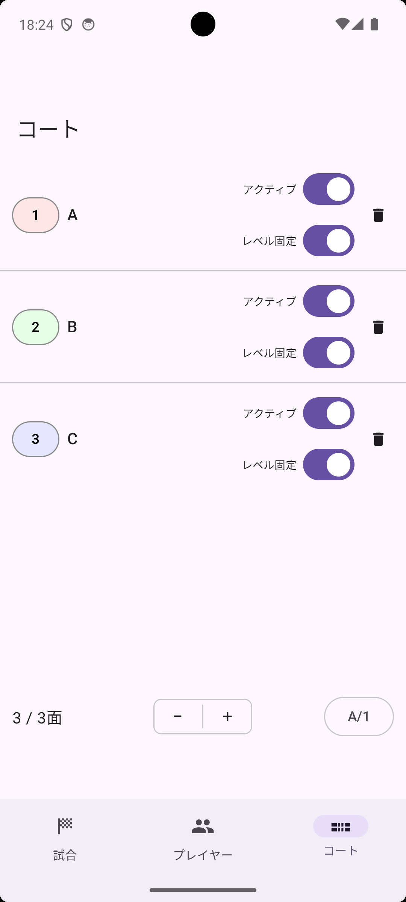
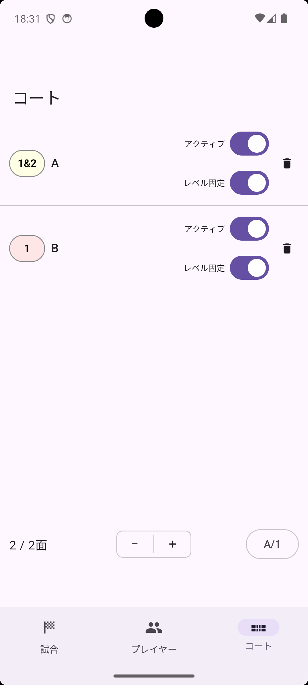
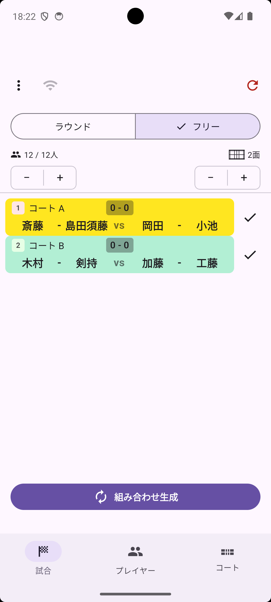

プレイヤーとコートにそれぞれレベルを設定することで、同じレベルのプレイヤーを特定のコートに割り当てられます。
プレイヤータブのレベルバッジ（または編集画面の レベル）をタップするたびに 1・2・3 と切り替わります。
| レベル | 色 | 用途例 |
|---|---|---|
| 1 | 赤 | 初級 |
| 2 | 緑 | 中級 |
| 3 | 青 | 上級 |
コートタブのコート編集画面で レベル を設定し、レベル固定 をオンにすると、そのレベルのプレイヤーのみが割り当てられるコートになります。

コートのレベルバッジを繰り返しタップして 1&2 に設定すると、必ずレベル1のプレイヤーとレベル2のプレイヤーが1人ずつ組んでチームになります（レベル1同士・レベル2同士のチームにはなりません）。男女混合や、レベル差のある練習会でご活用ください。

ゲームタブ上部のモードセレクターで フリー を選ぶと、フリーモードに切り替わります（コートが1面のみの場合は切り替えできません。2面以上を有効にしてください）。
フリーモードでは、コートごとに試合の終了・再開を個別に管理できます。空いたコートだけに次の組み合わせが生成されるため、試合時間がバラバラでも効率よく進行できます。
組み合わせ生成 で空きコートのみ次の組み合わせが生成されます
毎回欠席しがちなメンバーのプレイヤー編集画面で デフォルト欠席 をオンにしてメンバー保存しておくと、次にメンバーを読み込んだ際に自動的に休憩状態でリストに追加されます。当日参加する場合はトグルをオンに切り替えてください。
前半は複数レベルを一緒に回してから、後半はコートごとにレベル分けして各コートで個別に進行したい場合、前半の組み合わせ情報を維持したまま他の端末にセッションを共有し、後半はコートごとに別々の端末で進行を分担できます。また、複数の運営者がそれぞれ別々にプレイヤーを登録した状態で合流したい場合にも、現在のプレイヤーリストと組み合わせ結果を共有できます。
通常、組み合わせは待ち回数（連続して試合に出られなかった回数）が多いプレイヤーから優先的に選ばれます。特定のプレイヤーを待ち回数に関係なく次の組み合わせに必ず入れたい場合は、プレイヤータブの丸印をタップしてピン留めしてください。
1コートに対してプレイヤーが5人の場合、毎回必ず1人が休憩に回ります。全員を均等に休ませようとすると、休憩と休憩の間隔は平均5ターンになるため、最大で4連続試合になるのは仕様上避けられません（コート数に対してプレイヤーが1人多い状況では常に起こります）。これは特定の人だけが不公平に連続しているのではなく、全員が均等に「4連続→休憩1回」を繰り返す、数学的に最も公平な配分です。